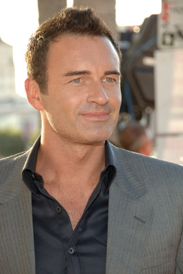
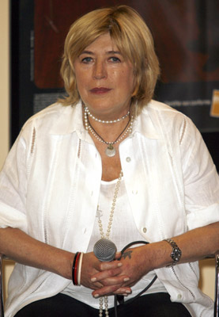
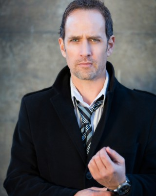
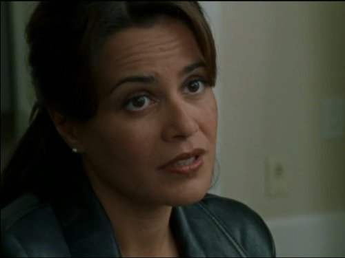
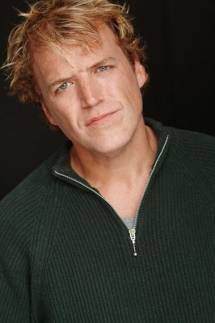

#6495 Faces in the Crowd


 IMDB-Wertung: 5.8 / 10
IMDB-Wertung: 5.8 / 10  Metascore: 0
Metascore: 0 
Anna Marchant ist Grundschullehrerin und führt ein einfaches, glückliches Leben. Eines Nachts beobachtet sie jedoch zufällig den Mord an einer jungen Frau und wird kurz darauf fast zum nächsten Opfer des Killers, der sich unter dem Pseudonym Tearjerk Jack einen Namen gemacht hat. Anna kann zwar ihrem Angreifer entkommen, doch während ihrer Flucht zieht sie sich eine schlimme Prellung am Kopf zu und leidet fortan an einer neurologischen Störung namens Prosopagnosie. Dieses, auch als Gesichtsblindheit bekannte Krankheitsbild, verhindert, dass Anna Personen anhand ihres Gesichtes identifizieren kann. Dennoch versuchen sie und der Polizisten Kerrest dem Angreifer auf die Spur zu kommen. Doch dieser kommt Anna bedrohlich nahe, ohne dass sie in der Lage ist, ihn zu erkennen.
Jahr: 2011
Dauer: 98 Minuten
FSK: 16
Land: USA Studio: Millennium EntertainmentTonspuren: DTS - ,
Untertitel:
Auflösung: 1080p (1920x800) Größe: 6031 MB
Genre: Thriller, Drama, Krimi, Liebe, Mystery
Regisseur: Julien Magnat
Drehbuch: Julien Magnat
Soundtrack:
Darsteller:
 Milla Jovovich als Anna Marchant
Milla Jovovich als Anna Marchant-  Julian McMahon als Sam Kerrest
- David Atrakchi als Lanyon / Tearjerk Jack
 Michael Shanks als Bryce
Michael Shanks als Bryce-  Marianne Faithfull als Dr. Langenkamp
 Sarah Wayne Callies als Francine
Sarah Wayne Callies als Francine- Valentina Vargas als Nina
- Nels Lennarson als Kerrest #2
- Chris Kalhoon als Kerrest #3
 Aaron Hughes als Man #1 / Man #2
Aaron Hughes als Man #1 / Man #2- Aaron Grain als Lanyon #2
- Jason Wishnowski als Lanyon #4
-  Robert Moloney als Lanyon #6
- Sebastien Roberts als Stranger / Lurker at start-up party
- David Ingram als Bryce #2
- Anthony Lemke als Bryce #3
- Stephen Huszar als Bryce #4
- Darcy Fehr als Bryce #7
- Adam J. Harrington als Bryce #8
- Jeff Pangman als Bryce #11
- Stephan Dubeau als Bryce #15
- Rosemary Dunsmore als Dr. Langenkamp #2
- Tasha Simms als Dr. Langenkamp #3
- Kirsten Robek als Francine #3
 Krista Bridges als Francine #4
Krista Bridges als Francine #4- Maria Marlow als Nina #3
- Medina Hahn als Nina #4
-  Venus Terzo als Nina #5
 Sandrine Holt als Nina #6
Sandrine Holt als Nina #6-  Adrien Dorval als Wino
 John B. Lowe als Headmaster
John B. Lowe als Headmaster- Claire Thomas als Lydia #3
- Tyhr Trubiak als Uniformed Policeman
- Stephen Eric McIntyre als Dazed Suspect with Cigar
 Alicia Johnston als Robert's Mother
Alicia Johnston als Robert's Mother- Jennifer Pudavick als Female Bridge Victim
- Pilar Floyd als Identical Nurses
- Kevin Klein als Priest #1 / Tearjerk Jack
 Darren Ross als Transit Cop #1
Darren Ross als Transit Cop #1- Kate Yacula als Anna #2 - in hospital mirror
- Apollonia Vanova als Anna #4 - in make-up mirror
- Michael James als Lanyon #3
- G. Patrick Currie als Lanyon #5 - fake Bryce
- Curtis Moore als Stranger - Lanyon #7
- Jordan Witzel als Bryce #6
- Stephen Gomori als Bryce #10
- Stephen Powell als Bryce #12
- Jerry Getty als Bryce #13
- Kevin Aichele als Bryce #14
- Frances Flanagan als Dr. Langenkamp #5
Datei: X:\2011(A-F)\Faces in the Crowd (2011, FSK16, 1920x800).mkv seit 28.06.2017
Festplatte: HD 2010(G-Z)-2011(A-F)
 Es gibt insgesamt 86 Filme in der Gruppe '2011(A-F)'
Es gibt insgesamt 86 Filme in der Gruppe '2011(A-F)'